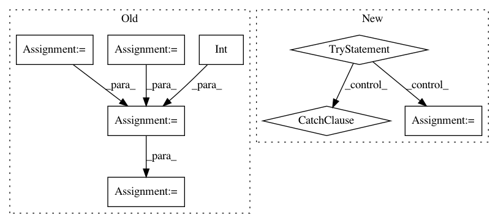

97a543976472f88b7922cc8f8ef3d7c0b6cd3dee,beamfpy/sources.py,PointSource,result,#PointSource#Any#,146
Before Change
shape (num, numchannels), the last block may be shorter than num
signal = fft.fft(self.signal.signal())
pos = array(self.loc, dtype=float).reshape(3, 1)
rm = self.env.r(self.c, pos, self.mpos.mpos)
delays = exp(-2j*pi*(rm/self.c)*\
fft.fftfreq(int(self.numsamples),1.0/self.sample_freq)[:,newaxis])
out = fft.ifft(signal[:, newaxis]*delays, axis=0).real/rm
i = 0
while i < self.numsamples:
yield out[i:i+num]
i += num
After Change
n = self.numsamples
while n:
n -= 1
try:
out[i] = signal[array(0.5+ind*self.up, dtype=long)]/rm
ind += 1.
i += 1
if i == num:
yield out
i = 0
except IndexError:
break
yield out[:i]
class MovingPointSource( PointSource ):
In pattern: SUPERPATTERN
Frequency: 3
Non-data size: 8
Instances
Project Name: acoular/acoular
Commit Name: 97a543976472f88b7922cc8f8ef3d7c0b6cd3dee
Time: 2012-02-06
Author: sarradj@tu-cottbus.de
File Name: beamfpy/sources.py
Class Name: PointSource
Method Name: result
Project Name: lebedov/scikit-cuda
Commit Name: 4b0915db2571d721e4c9118ff4a324bd2e0867f2
Time: 2013-07-28
Author: lev@columbia.edu
File Name: scikits/cuda/misc.py
Class Name:
Method Name: cumsum
Project Name: lebedov/scikit-cuda
Commit Name: 6b05ce9b975fdcdb982e4f3b14099df0f9e341af
Time: 2013-07-28
Author: lev@columbia.edu
File Name: scikits/cuda/misc.py
Class Name:
Method Name: maxabs